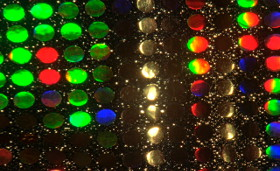

Razzle Dazzle
Jodie Mack – USA 2014
5 min – 16mm – silent
Sc+P: Jodie Mack
Tacky threads luminesce at a firefly’s pace, twinkling through remnants of chintzy opulence and gaudy glamour prestissimo brilliante.
tuesday 13 oct 10.30 pm werkstattkino
Jodie Mack (1983, London) completed her Master of fine Arts in film, video and media at the School of the Art Institute of Chicago in 2007. In the analogue film process, she explores the relationship between graphic film and storytelling as well as the tension between form and meaning. Her material often consists of everyday decorative things – overlooked and wasted objects whose kinetic energy she releases in her films.
Films (selection) Yard Work is hard work 2008 – Twilight Spirit 2009 – Unsubscribe #1 - #4 2010 – August Song 2011 – Pont de Gaze 2012 – MackDash 2012 – Let your light shine 2013 – New Fancy Foils 2013 – Dusty Stacks of Mom: The Poster Project 2013